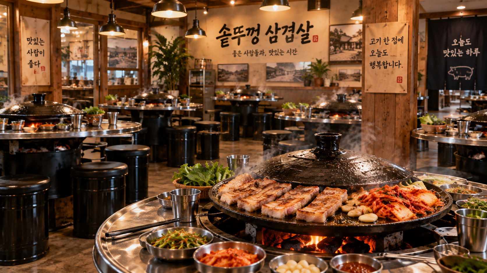

좋은 고기
고기 품질과 숙성에
타협하지 않습니다.
CHEONGJU · SOTDDUKKUNG SAMGYEOPSAL
정직하게 숙성한 고기를 뜨거운 솥뚜껑에 올립니다.
오늘의 가장 맛있는 한 점을 정성으로 구워드릴게요.
OPEN 11:00 — 21:00
매주 월요일 휴무
OUR PROMISE
좋은 재료를 가장 맛있는 상태로 내어드리는 일. 그것이 솥뚜껑 삼겹살이 고집하는 기준입니다.
정감 있는 동네 맛집의 마음과 고급 숙성육 전문점의 기준을 한 상에 담아냅니다.
솥뚜껑의 기준 보기 →고기 품질과 숙성에
타협하지 않습니다.
가장 맛있는 순간까지
직접 구워드립니다.
반찬과 찌개까지
든든하게 준비합니다.
TABLE SERVICE
THE PLACE

오늘도
맛있게
활기찬 회식부터 오붓한 데이트, 편안한 가족 식사까지. 44석 규모의 넉넉한 공간에서 마음껏 즐겨보세요.
CHEONGJU
SEO WON-GU
ADMIN · RESERVATION
오늘 이후 가장 가까운 방문 요청일 순으로 표시합니다.
| 고유번호 | 예약자 성명 | 예약일자 | 신청일자 | 인원 | 연락처 | 참고사항 | 예약상태 |
|---|